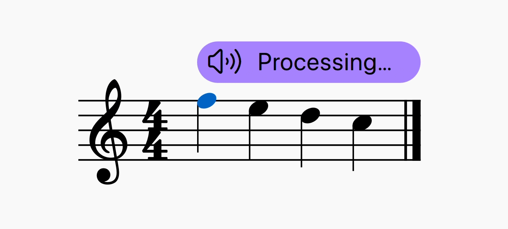
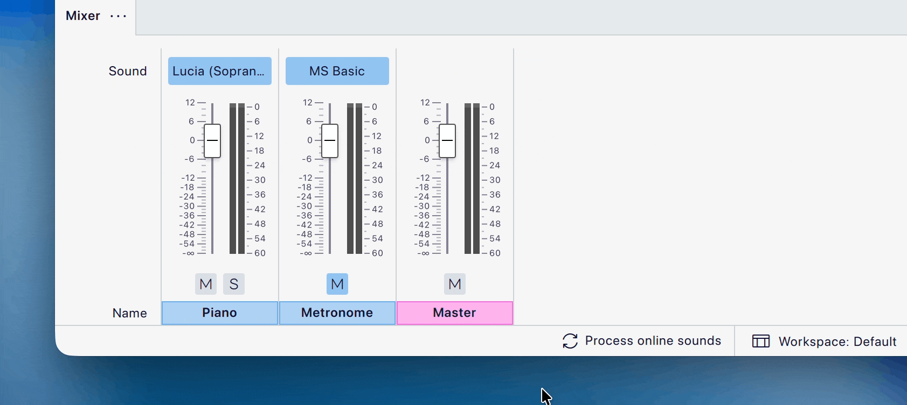

在线音色
在线音色的工作原理
在线音色仅兼容 MuseScore Studio 4.6 及以上版本。强烈建议使用最新可用版本以确保最佳性能。此功能目前仅在 Windows 和 macOS 上可用。
在线音色是一种音色库，它在远程服务器上处理你的记谱数据，然后将音频发送回 MuseScore Studio。这使得播放更加逼真、更具上下文感知能力。该功能还能理解歌词等文本信息，使包含文字的声乐旋律能够"演唱"出来。
如何设置在线音色
要在 MuseScore Studio 中设置在线音色，你首先需要从 MuseHub 安装一个支持在线处理的音色库。
截至 2025 年 12 月，Turing Opera Workshop 的 Cantai 是 MuseHub 中唯一支持 MuseScore Studio 在线音色的音色库。其他音色库和厂商将逐步添加到 MuseHub 中。
要安装 Cantai，请确保关闭所有 MuseScore Studio 实例。
- 确保你运行的是最新版本的 MuseHub（如果你还没有 Muse Hub，可以免费从 musehub.com 下载）
- 搜索 Cantai 或在 MuseSounds 页面中找到它
- 单击紫色的 安装 或 下载 按钮安装 Cantai
Cantai 安装完成后：
- 重启 MuseScore Studio
- 打开 混音器
- 转到 音色 选择器，在 MuseSounds 菜单中找到 Cantai
- 选择一位歌手/声部类型
应用窗口底部的状态栏中会出现一个新的指示器，让你知道记谱何时正在在线处理，以及何时可以播放。

使用在线音色
默认情况下，你的记谱会在你工作时定期在后台处理。当你停止输入或编辑记谱后，每隔几秒就会处理一次。
正在处理的记谱区域上方会出现一条闪烁的紫色条。如果某个区域尚未完成处理，播放期间会以钢琴音色替代。

自定义在线音色处理
除了默认的自动处理选项外，你可以选择降低紫色闪烁条出现的频率（即仅在播放期间出现），甚至可以完全手动控制处理的时机。
要更改紫色处理条的出现时机：
- 打开 偏好设置
- 转到 音频与 MIDI
- 向下滚动到 在线音色
- 单击 显示处理可视化 旁边的下拉菜单
- 选择 仅在播放期间处理未完成时，则 只有按下播放** 后，未处理区域上方才会显示紫色处理条。
- 选择 从不，则允许在线音色继续自动在后台处理，而不显示紫色处理条。
要启用手动控制处理：
- 打开 偏好设置
- 转到 音频与 MIDI
- 向下滚动到 在线音色
- 取消勾选 在后台自动处理在线音色
状态栏中的处理指示器会变成一个按钮。随时单击此按钮即可处理在线音色。
手动控制处理可以降低超出在线音色库厂商设定的数据处理限制的可能性。当使用移动数据网络或互联网连接不稳定时，这也很有用。

缓存与重置已处理的音频
MuseScore Studio 将你处理过的音频存储在计算机上的系统缓存中。这意味着已经处理过的记谱无需 重新处理，除非你对其进行更改。它还允许你在没有互联网连接的情况下继续听到已处理的音频（不过请注意，离线时所做的任何更改都会触发默认钢琴音色替换你已处理的音频，直到互联网连接恢复后能够重新处理为止）。
如果你想删除计算机上存储的所有已处理音频：
- 进入 帮助
- 单击 清除此乐谱的在线音色缓存
此操作只影响你正在处理的单个乐谱，不会影响同一时间其他应用实例中打开的乐谱。
清除乐谱的在线音色缓存会自动触发对你的记谱的重新处理。
限制
处理限制
不同厂商可能会对你在给定时间范围内从 MuseScore Studio 进行的处理（"渲染"）量施加各自的限制。要了解特定音色库的限制，请查阅该音色库的 用户指南（可在 MuseHub 中该音色库的产品页面找到）。
请注意，处理限制仅适用于 未处理 的记谱数据；你已经处理过并存储在本地（"缓存"）在计算机上的记谱不受影响，即使达到任何处理限制后仍可播放。
截至 2025 年 12 月，Cantai 每周最多包含 180 分钟的渲染时间，时间每周一重置。你乐谱中已处理的部分即使达到每周限制后仍会继续播放。
MuseScore Studio 不对处理限制负责，也无法控制处理限制，但会在你达到限制时以及处理配额何时重置时在应用中通知你。
语言
截至 2025 年 12 月，Cantai 支持英语和拉丁语。德语、法语、西班牙语、日语和中文正在开发中。不支持的语言可能只能部分渲染，不太可能完整可靠地工作。